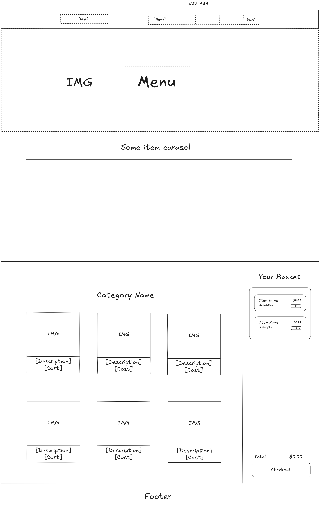
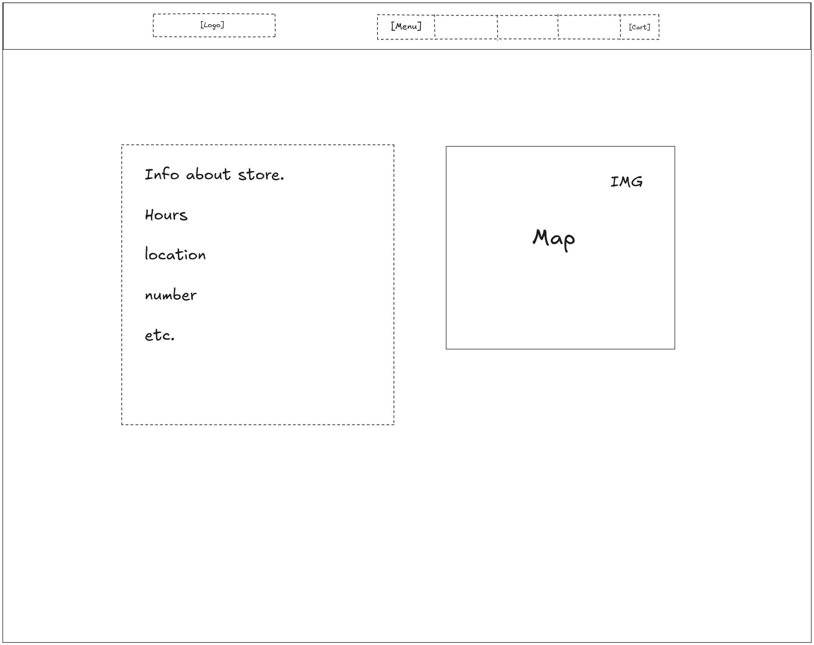
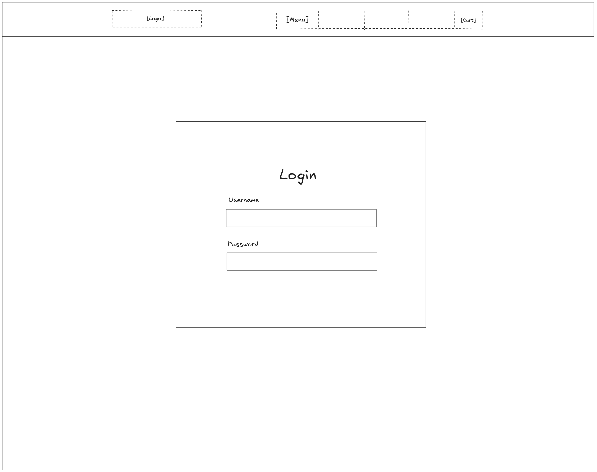
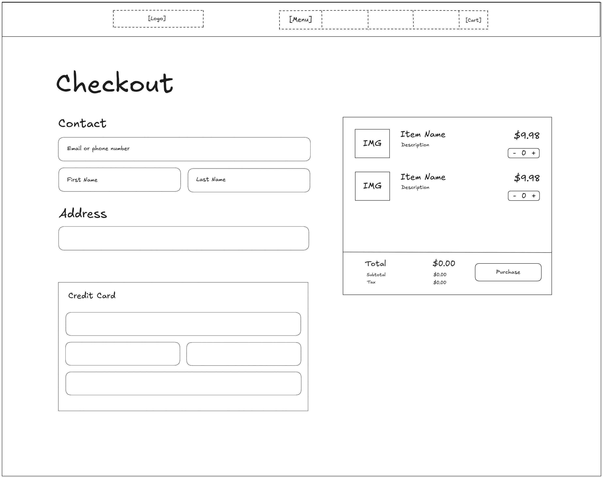

Team Members
Braden Chan, Harry Kwok, Hetarth Parikh, Leon Li, Uzair Sowdagar
Client
Feng
App Name
The Taste of Qin Yun
Purpose
The purpose of this application is to provide a comprehensive digital platform for a restaurant, integrating online ordering, an interactive menu, and general information into a single, user-friendly system. Customers will be able to browse menu items, customize their orders, and place them directly through the app, while also accessing essential details such as location, hours, and promotions. This product was chosen because of the growing demand for convenient, contactless dining experiences and the increasing reliance on digital solutions in the food service industry.
Data Description
Table: MenuItems
Purpose: Stores all menu items available to customers
Data:
- item_id (int)
- name (string)
- description (string)
- price (float)
- image_url (string)
- availability (boolean)
Table: Orders
Purpose: Stores customer orders
Data:
- order_id (int)
- customer_id (int)
- order_status (string)
- order_type (string) (pickup/delivery)
- total_price (float)
- created_at (long)
Table: OrderItems
Purpose: Links orders to menu items
Data:
- order_item_id (int)
- order_id (int)
- item_id (int)
- quantity (int)
Table: Customers
Purpose: Stores customer information
Data:
- customer_id (int)
- name (string)
- email (string)
- phone (string)
- password (string)
App Functions
- Browse menu - SELECT menu items from database
- Filter menu - SELECT with conditions
- Add to cart - client-side (JavaScript) + temporary storage
- Place order - INSERT into Orders and OrderItems
- Update order status - UPDATE Orders
- Manage menu - INSERT, UPDATE, DELETE MenuItems
- Login system - authentication using SELECT
Team Member Roles
Harry: UI & Homepage
- Designs and builds the home page and static information pages (about, contact, hours)
- Implements responsive layout and overall site navigation using HTML/CSS/JavaScript
- Uses PHP to load shared components and display basic restaurant information
- Retrieves and displays restaurant data (hours, contact info) from the database
Deliverables: Home page, contact/info pages, info display
Braden: Menu
- Builds dynamic menu page using PHP to retrieve menu items from the database
- Implements menu filtering and searching using JavaScript
- Displays item details (name, description, price, image, availability)
- Handles database queries for MenuItems (SELECT, filtering conditions)
Deliverables: Menu page, menu display system, filtering/search features, MenuItems database integration
Hetarth: Cart & Ordering System
- Implements add-to-cart and cart management using JavaScript
- Builds checkout system and order summary
- Uses PHP to store orders in the database (Orders and OrderItems tables)
- Handles order creation, item quantities, and total price calculations
Deliverables: Cart system, checkout page, order processing, Orders & OrderItems database functionality
Leon: User Login
- Implements login and signup system using PHP
- Uses JavaScript for form validation and user interaction
- Manages customer data in the database (Customers table)
- Connects user accounts to orders and supports secure access
Deliverables: Login/signup system, authentication logic, customer database management
Uzair: Admin Dashboard
- Develops admin dashboard for managing menu items and orders
- Implements CRUD operations for MenuItems, Orders, and Customers
- Handles real-time order status updates and admin controls
- Manages overall database structure and ensures integration across the system
Deliverables: Admin dashboard, CRUD functionality, order management system, full database integration
Wireframes





First Increment
Target Date: March 25, 2026
The first increment will deliver a hosted web application with minimal but functional contributions from each team member. The objective is to establish a working system where all core components (frontend, backend, database, and deployment) are integrated.
Work:
- Braden Chan: Implement Menu page
- Harry Kwok: Implement home page + CSS
- Hetarth Parikh: Implement About Us + Location
- Leon Li: CSS
- Uzair Sowdagar: Graphics + Logo
Client Feedback
The client's main feedback focused on simplicity and ease of use. They asked, “Can customers place an order without creating an account?” and “Will we be able to update the menu quickly if items change?” Based on this, we added a guest checkout option to streamline ordering and planned an admin feature to allow easy menu updates. These changes ensure the app is both user-friendly and practical for daily restaurant operations.